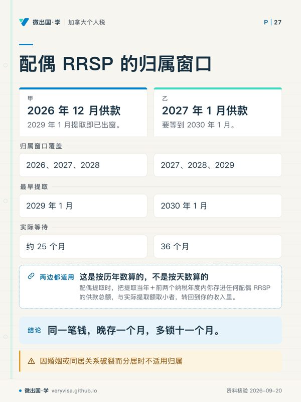
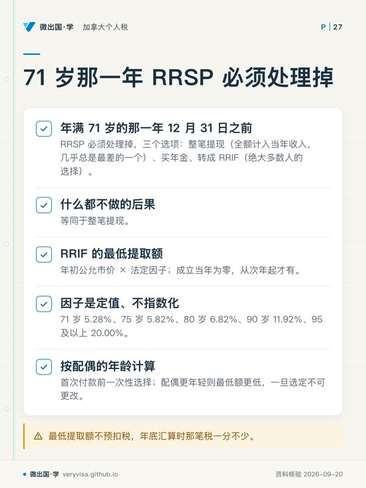
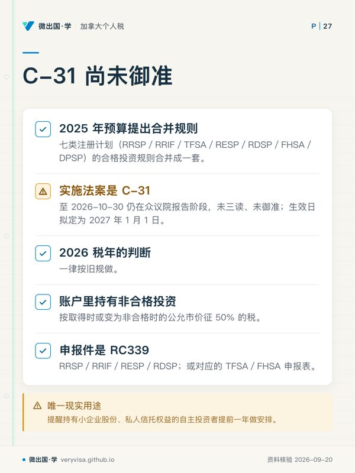

核实日期：2026-10-30｜现行口径：2026 税年（2027 年春申报）｜复核：2027-01-31（本页含逐年指数化的额度与一条 2027-01-01 生效的已宣布改革） 法条依据指向《所得税法》(Income Tax Act, ITA) 与《所得税条例》(Income Tax Regulations) 现行合订本；数值指向加拿大税务局 (Canada Revenue Agency, CRA) 现行页面。共同的年度数字总表另见 加拿大报税会变的数字：2026 税年总表与它们各自的定值机制（Federal Tax Numbers 2026）。
一个在温哥华工作的人，手上通常同时开着三个注册账户：退休储蓄的 RRSP、什么都能装的 TFSA、以及 2023 年才出现的购房专用 FHSA。它们看起来都是「免税账户」，但在税法上是三套完全不同的机器：一套是先扣后税的递延器，一套是税后进、永不再课的免税器，一套是两头都免的一次性工具。搞混它们的代价不是少赚一点利息，而是一笔 1%/月一直跑下去的罚税、一个永远拿不回来的额度、或者一笔本该完全免税的钱在某年 12 月 31 日整笔变成应税收入。这一页帮你做三件事：拿着上一年的报税记录算出自己 2026 税年的三套额度；看清同一笔钱从三个账户取出时，报表上分别落在哪一行、预扣多少、要不要还；认出那五类几乎必然产生罚税的操作。
一、制度设计与底层逻辑：三台机器，三种交易
本节回答This section answers 理解三大账户税制逻辑与TFSA从事生意罚则Understand the tax logic of the three accounts and the TFSA penalty for carrying on a business

1.1 递延、免税、双免：政府在三个时点上做选择
任何一个储蓄账户的税务待遇，其实只在三个时点上做选择题：存进去的时候扣不扣？账户里长的钱课不课？取出来的时候算不算收入？ 加拿大在这三个格子上填了三种组合，就得到了三种账户。
RRSP 填的是「扣 · 免 · 课」：供款可以从当年收入里扣掉，账户内的利息股息资本利得一律不课税，提取时全额计入当年收入。它不是免税工具，是税率套利工具——你在边际税率高的年份把收入推走，在边际税率低的年份把它取回来，赚的是两个税率之间的差，加上这中间几十年复利的时间价值。这也解释了为什么它对高收入者最值钱、对低收入者可能是负值：一个今天边际税率 19.6%（2026 年联邦 14% ＋ BC 5.6%）、退休后因为 GIS 递减而实际边际税率超过 50% 的人，用 RRSP 是在做反向套利。
TFSA 填的是「不扣 · 免 · 不课」：税后的钱进去，长出来的钱与本金取出来都不是收入，不进任何一条以「净收入」或「应税收入」为基数的计算式。这最后半句才是它对中低收入者的真正价值：提取额不影响老年保障金 (Old Age Security, OAS) 回收、不影响加拿大儿童福利 (Canada Child Benefit, CCB)、不影响保证收入补贴 (GIS)、不影响任何一项按收入递减的省级抵免。
FHSA 填的是「扣 · 免 · 也不课」——三个格子全占了便宜，这在税法里是极少见的。代价是它有严格的用途与期限：只能用于买第一套自住房，且账户本身有寿命。政府用「限用途 ＋ 限时」换了「双重免税」，这是它整个设计的交换条件。
ℹ️
「注册」两个字管的是税，不是投资
三个账户都只是一层税务外壳。壳里能装 GIC、股票、基金、ETF、债券，装什么由你决定，壳只决定这些东西产生的收益怎么被课税。所以「TFSA 的回报率」这个说法本身是错的——TFSA 没有回报率，你放进去的那些东西才有。
1.2 谁与谁在博弈：额度是国家发的配额
三个账户的核心资源都是额度 (room)，而额度是国家按公式发给你的、不可交易、不可赠与、用错了通常也拿不回来的配额。博弈就发生在这里。
纳税人想多存，国家想控总量。 RRSP 的额度绑在你上一年的赚取收入 (earned income) 上（工资、自雇净收入、租金净收入、赡养费等，投资收入与养老金不算），并且被一个年度上限封顶；有雇主养老金的人还要减去养老金调整额 (pension adjustment, PA)，这样在企业年金里已经享受过的递延就不会重复享受一次（CRA）。TFSA 的额度与收入完全脱钩，人人一样——这是它作为普惠工具的立法定位。FHSA 的额度只在你开户之后才开始累积，这一条埋掉了大量本可以享受的额度。
国家用按月计征的税守住供款边界。 三个账户对超额的处理惊人地一致：1% 每月，直到你把它取出来为止。这是对相应超额基数计征的特别税，并不是贷款利率——立法者的意思是「你可以超，但要付一个高于市场的资金成本」，所以它不封顶、按月滚，且不因为你不知情而中止。
省份完全不参战。 注册账户的规则百分之百是联邦的。BC 省既不能改额度、也不能改提取时的计入方式，它能改的只有那笔提取额上面压的省税率（第四节）。
1.3 错报的三类法律后果
- 按月计的税，不是一次性罚款。 RRSP 超额走的是《所得税法》第 X.1 部（Part X.1）的税，申报件是 T1-OVP，期限是历年结束后 90 天——应独立于T1申报期限安排；迟报另加 5% ＋ 每月 1%（封顶 12 个月），利息自次年第 91 天起按日复利（CRA（论坛解读））。TFSA 与 FHSA 的超额税各有自己的申报表（RC243 与 RC728），期限是次年 6 月 30 日。
- 额度可以永久消失。 从 RRSP 里取钱不恢复额度；HBP与LLP指定还款另有机制，但不会创造新的扣除额度；从 FHSA 里做合格提取之后，账户的寿命进入倒计时。只有 TFSA 的提取额会在次年 1 月 1 日变回额度（CRA）。
- 免税外壳挡不住性质认定。 ITA s.146.2(6) 明文：TFSA 信托免第一部税，除非它在该年从事一项或多项生意——那部分收入照常课税，而且持有人与信托连带负责（加拿大联邦法规库）。在 TFSA 里做高频交易并不能把经营利润变成免税收入。
二、2026 税年现行规则与数字
本节回答This section answers 掌握RRSP两千元缓冲的免罚但不可扣除规则Master the RRSP $2,000 buffer: penalty-free but not deductible 本章考题 1Question 1 本章考题 2Question 2 本章考题 4Question 4
2.1 三个账户的额度：一张表看完 2024 考试口径值到 2026 现行值
| 项目 | 2024 税年（考试口径） | 2025 税年 | 2026 税年（现行） | 状态 |
|---|---|---|---|---|
| RRSP 年度上限 | 31,560 元 | 32,490 元 | 33,810 元 | 已生效；适用条件见下文及相应官方来源 |
| 触及上限所需的上年赚取收入 | 31,560 元 ÷ 18%（推算） | 32,490 元 ÷ 18%（推算） | 33,810 元 ÷ 18%（推算） | 仅由年度上限反推；实际额度还受PA、PAR、PSPA及结转影响 |
| RRSP 下一年上限 | — | — | 2027 年为 35,390 元 | 已生效并已公布；机制＝当年上限恒等于上一年的 MP 上限（CRA（论坛解读）） |
| TFSA 年度额度 | 7,000 元 | 7,000 元 | 7,000 元 | 已生效；适用条件见下文及相应官方来源 |
| TFSA 累计额度（1991年或以前出生、2009起每年合格且从未供款者） | 95,000 元 | 102,000 元 | 109,000 元 | 依各年均有居民/年龄资格、未供款提取假设推算（CRA） |
| FHSA 年度参与额度 | 8,000 元 | 8,000 元 | 8,000 元 | 已生效；适用条件见下文及相应官方来源 |
| FHSA 单年最高可存 | 16,000 元 | 16,000 元 | 16,000 元 | 已生效；适用条件见下文及相应官方来源 |
| FHSA 终身上限 | 40,000 元 | 40,000 元 | 40,000 元 | 已生效；适用条件见下文及相应官方来源 |
| HBP 提取上限 | 4月16日及以前 35,000 元；4月17日起 60,000 元 | 60,000 元 | 60,000 元 | 已生效；适用提取日期而非全年单一值（加拿大联邦法规库） |
| LLP 年度／参与期上限 | 10,000 元／20,000 元 | 10,000 元／20,000 元 | 10,000 元／20,000 元 | 已生效；提取用于合格学习且符合条件（CRA） |
三条从这张表里读出来的机制，比表里任何一个数都重要：
RRSP 的上限提前一年就能知道。 条文把 RRSP 年度上限定义为上一年的固定供款计划 (money purchase, MP) 上限，而 MP 上限每年秋天随平均工资指数公布。所以 CRA 的额度表里 2027 那一行早就写着 35,390 加元（2027 税年；已生效；官方公布值）——这不是预测，是机制（CRA（论坛解读））。做多年规划时可以直接用。
TFSA 的额度会连续几年不动，这不是漏更新。 它以 5,000 元为基数指数化后取整到最近的 500 元，所以指数化的零头要攒好几年才够跳一档。2023年为6,500元，2024升至7,000元，2025/2026维持该值，要等指数化把它推到更接近下一档7,500而不是7,000 的位置才会再涨（CRA）。考试口径写的 2024 年 7,000 元至今仍然准确。
FHSA 的两个数都不指数化。 8,000 加元（2026 税年；已生效；官方公布值） 与 40,000 加元（2026 税年；已生效；官方公布值） 是法定值，2023 年至今一个数没变过，可以在多年规划里当常数用。
2.2 RRSP：额度公式、供款窗口、以及那个 2,000 加元（2026 税年；已生效；官方公布值）缓冲
2026 税年的额度公式（CRA 的官方口径，CRA）：
RRSP 额度 ＝ 上年结转的未用额度 ＋ min（上一年赚取收入 × 18%，当年年度上限 33,810 加元（2026 税年；已生效；官方公布值）） − 上一年的养老金调整额 PA ＋ 养老金调整逆转额 PAR − 净过往服务养老金调整额 PSPA
四条容易错的地方：用的是上一年的收入（2026 年的额度看 2025 年的赚取收入），未用额度无限期结转（不会过期），投资收入与养老金收入不算赚取收入，以及权威数字只有一个来源——评税通知书 (notice of assessment, NOA) 上的「RRSP Deduction Limit Statement」，或 CRA 账户里的同一格。自己按公式算是为了理解机制与做规划，报税时以 NOA 为准。
供款窗口跨两个历年。 一个税年的 RRSP 供款期是该年 1 月 1 日到次年前 60 天结束为止。CRA 给的 2025 税年实际窗口是 2025 年 3 月 4 日至 2026 年 3 月 2 日（3 月 1 日是周日，顺延）（CRA）；按同一条「次年前 60 天」规则，2026 税年的截止日是 2027 年 3 月 1 日（星期一）。这意味着次年 1、2 月的供款有一个选择权：既可以扣在上一年，也可以留到本年。收入年际波动大的人，这两个月是全年最有价值的规划窗口。
71 岁那条线是硬的。 你能供自己 RRSP 的最后一天是你年满 71 岁那一年的 12 月 31 日；但供配偶计划看的是配偶的 71 岁——只要配偶还没到，你自己 80 岁也照样可以供，前提是你还有额度（CRA）。这是退休后仍能继续做收入分拆的一条通道。
2,000 加元（2026 税年；已生效；官方公布值）缓冲是给成年人的，而且不能扣。 只有在上一个历年内任何时候年满 18 岁的人才有这一格；超出额度但在 2,000 加元（2026 税年；已生效；官方公布值）以内的部分不罚，但也不能扣除——它只是一个免罚区，不是额外额度（CRA（论坛解读））。超出 2,000 加元（2026 税年；已生效；官方公布值）的部分按 1% 每月计税，直到取出为止。
✕
同一个月内取出来，这笔罚就不存在
CRA 明确列出三种免于 1% 税的情形，其中最实用的一种是：在产生超额的那个月结束之前把超额取出来（CRA（论坛解读））。所以发现超额的第一反应应该是打给金融机构而不是等 CRA 通知——等通知意味着至少已经跑了十几个月。合理错误造成的超额，可以用 RC2503 申请豁免或取消，但那是补救，不是权利。
2.3 TFSA：额度怎么长，以及两条独立的 1%
2026 年 1 月 1 日加进去的是 7,000 加元（2026 税年；已生效；官方公布值）。 完整的额度算式是（CRA）：
可用额度 ＝ 当年年度额度 ＋ 历年未用额度 ＋ 上一年的提取额 − 本年已供款额
关键在第三项：当年提取的钱要到次年 1 月 1 日才变回额度。这一条制造了 TFSA 最高频的错报形态——同年取出再存回去。
两条 1% 是独立的、可以叠加的：
| 触发条件 | 计税基数 | 什么时候停 | 申报件 |
|---|---|---|---|
| 超额供款 | 当月最高超额金额 | 把超额取出为止 | RC243（CRA） |
| 非居民期间的任何新供款 | 该笔供款金额 | 取出，或恢复加拿大居民身份为止 | 同上（CRA（1（论坛解读）、2）） |
第二条与额度够不够无关：哪怕你额度充足，只要在非居民期间存钱，就按 1%/月计税。两条同时踩中的人（非居民 ＋ 超额）要付两份。
离境后 TFSA 的完整待遇（CRA（论坛解读））：账户可以留着，里面的增值加拿大不课税（居住国可能课）；整年都是非居民的年份不产生新额度，但部分年度居民照给整年的年度额度，所以离境当年那 7,000 加元（2026 税年；已生效；官方公布值）仍然给你；非居民期间的提取额，要等你恢复居民身份的那一年才变回额度。
⚠️
CRA 账户里那个「可用额度」，1 月 1 日看到的几乎必然偏高
金融机构次年 2 月底才把上一年的交易报给 CRA，CRA 春季才更新。所以 1 月 1 日登进去看到的数字，反映的是前年年底的状态加上新一年的年度额度，你去年的供款很可能还没扣掉。CRA 自己在页面上写着「用你自己的记录算，不要用 CRA 账户里的数」（CRA）。这是少数几个官方明说「别信我这个数」的地方。
2.4 FHSA：三个数、一条寿命线、和两个「不」
额度结构（CRA）：开户当年 8,000 加元（2026 税年；已生效；官方公布值）；此后每年 8,000 加元（2026 税年；已生效；官方公布值），加上封顶 8,000 加元（2026 税年；已生效；官方公布值）的结转，所以任何一年最多 16,000 加元（2026 税年；已生效；官方公布值）；终身合计不超过 40,000 加元（2026 税年；已生效；官方公布值）。三条限制同时生效，取最紧的那条。
额度只在开户之后才开始累积。 2023 年 4 月 1 日起可以开户，但没开户就没有那一年的额度——一个 2023 年符合条件却没开户的人，2026 年开户时拿到的是 8,000 元，不是 32,000 元。这是 FHSA 与 TFSA 最大的机制差别，也是最贵的一个：开一个空账户的成本是零，不开的成本是每年 8,000 元额度。
从 RRSP 转进来的钱占额度，且不能再扣。 FHSA 的参与额度对「现金供款」与「从 RRSP 直接转入」是合并计算的；而转入的那部分当初进 RRSP 时已经扣过一次，所以不能再扣第二次（CRA）。这条路的价值不在扣除，在于把 RRSP 里的钱换成「取出来不用还、也不计入收入」的身份。
账户有寿命：最长参与期在三个终点里取最早的一个（CRA（1、2（论坛解读）））：
- 开设第一个 FHSA 满 15 周年的那一年年底；
- 你年满 71 岁的那一年年底；
- 首次合格提取的次年年底。
✕
到期不关户，全部余额在 12 月 31 日整笔变成收入
参与期结束时账户里还有钱，它当天失去 FHSA 身份，12 月 31 日的全部公允市价一次性计入当年收入（T4FHSA 的第 26 格）（CRA（论坛解读））。而正确做法几乎没有成本：整笔直接转进 RRSP 或 RRIF，税延、且不占用 RRSP 额度。也就是说，没买成房的人也不亏——FHSA 的下行风险只有一个，就是忘了这条时间线。第三个终点（首次合格提取的次年）最容易被忽略：很多人提完钱买了房，账户里还剩几千块，两年后收到一张税单。
FHSA 的两个「不」，正是它和 HBP 的分界：不用还，没有最短存放期（当天存进去当天做合格提取也算数）（CRA（论坛解读））。
2.5 三个账户的出口：提取时发生什么
| 出口 | 计不计入收入 | 预扣税 | 要不要还 | 额度恢复吗 | 报在哪 |
|---|---|---|---|---|---|
| RRSP 普通提取 | 全额计入 | 10 / 20 / 30%（魁北克 5 / 10 / 15%） | 否 | 永久消失 | T4RSP → 报表 line 12900 |
| RRSP 提取 · HBP | 不计入 | 60,000 加元（2026 税年；已生效；官方公布值）以内且符合全部条件不预扣 | 15 年还清 | 指定还款不占新额度，也不形成新扣除 | Schedule 7 |
| RRSP 提取 · LLP | 不计入 | 10,000 加元（2026 税年；已生效；官方公布值）年度限额内且符合全部条件不预扣 | 10 年还清 | 指定还款不占新额度，也不形成新扣除 | Schedule 7 |
| RRIF 最低提取额 | 全额计入 | 不预扣 | 否 | — | T4RIF → line 11500 或 13000 |
| RRIF 超过最低额的部分 | 全额计入 | 10 / 20 / 30% | 否 | — | 同上 |
| TFSA 任何提取 | 不计入 | 无 | 否 | 次年 1 月 1 日恢复 | 不上报表 |
| FHSA 合格提取 | 不计入 | 无 | 否 | 不恢复；触发参与期终点 | Schedule 15 / T4FHSA |
| FHSA 应税提取 | 全额计入 | 有 | 否 | 部分转为「再参与额度」 | line 12905 / 12906 |
预扣税率是按每一次提取分档的：5,000 元以下 10%，5,000 至 15,000 元 20%，15,000 元以上 30%；非居民一律 25%，协定可降（CRA、加拿大联邦法规库（论坛解读））。
⚠️
分四次提，只是把税推到明年，不是省税
一次提 20,000 元预扣 30%，分四次各提 5,000 元只预扣 10%——年底汇算时应纳税额完全一样，差的只是你什么时候把钱交出去。分拆提取真正的代价在别处：RRSP 额度按提取总额永久消失，跟你分几次没有关系。反过来，预扣不足的人到次年 4 月 30 日要一次性补齐，还可能触发分期预缴义务。
2.6 一条 2027 年生效的改革，现在只能写成「已宣布」
2025 年预算提出把七类注册计划（RRSP／RRIF／TFSA／RESP／RDSP／FHSA／DPSP）的合格投资 (qualified investment) 规则合并成一套：保留并扩展第一套小企业投资规则、废除第二套、废除注册投资 (registered investment) 登记制，改按两类新的合格投资信托认定。实施法案是 C-31：2026-10-30 委员会报告已提交众议院，进入报告阶段，尚未三读、未御准 (royal assent)，生效日拟定为 2027 年 1 月 1 日（加拿大财政部、Parliament of Canada）。
所以 2026 税年的判断一律按旧规做：账户里持有非合格投资，按取得时或变为非合格时的公允市价征 50% 的税，申报件是 RC339（RRSP／RRIF／RESP／RDSP）或对应的 TFSA／FHSA 申报表。「已宣布」不是「规则」——这一条的唯一现实用途是提醒持有小企业股份、私人信托权益的自主投资者提前一年做安排。
想检验自己，可以做本板块的练习题（共 50 道）：按主题练习。
三、实务流程：表、行号、凭证、期限
本节回答This section answers 区分FHSA供款无60天宽限与年底严格截止Distinguish that the FHSA has no 60-day grace period and a strict year-end deadline 本章考题 3Question 3
3.1 一年的动作落在哪几张表上
RRSP 一侧的核心是 Schedule 7（正式名称是《RRSP、PRPP 与 SPP 供款与转移，及 HBP 与 LLP 活动》）。它同时承担五件事：申报本年度全部供款、指定其中要在本年扣除的部分、结转未扣除的部分、申报 HBP／LLP 的提取、指定 HBP／LLP 的还款。扣除额落到报表的 line 20800。这里有一个几乎人人都误解的点：供款与扣除是两件事——供了不一定要当年扣，未扣部分可以无限期结转，等到边际税率更高的年份再扣。收入将要跳档的人（比如明年结束读书开始工作），今年供、明年扣是标准操作。
FHSA 一侧的核心是 Schedule 15。 它记录你是不是当年开的户、当年的供款与从 RRSP 的转入、合格提取，并算出可扣除额，落到 line 20805。凭证是发行机构出的 T4FHSA。
TFSA 一侧平时什么表都不用报。 只有在需要缴税（超额、非居民供款、非合格投资、「优势」）时才填 RC243。这也是它最容易失控的原因：没有任何一张年度表会逼你对一次账。
提取一侧看单据：T4RSP（RRSP 提取，HBP 在第 27 格、LLP 在第 25 格）、T4RIF（RRIF 收入）、T4FHSA（FHSA 的各类提取与转移）。配偶计划的归属计算用 T2205。
3.2 期限：四个不同的日子
| 动作 | 期限 | 备注 |
|---|---|---|
| RRSP 供款（算进上一税年） | 次年前 60 天结束时 | 2025 税年是 2026-03-02（CRA）；2026 税年是 2027-03-01 |
| FHSA 供款（算进本税年） | 本年 12 月 31 日 | 没有 60 天规则，这是与 RRSP 最刺眼的差别 |
| TFSA 供款 | 无期限 | 但年内提取要等次年 1 月 1 日才恢复额度 |
| RRSP 超额税 T1-OVP | 历年结束后 90 天 | 比报税季早三个月（CRA（论坛解读）） |
| HBP 购房或建成 | 提取次年的 10 月 1 日前 | 未达成要按取消程序处理（CRA） |
| RRSP 转 RRIF／年金 | 年满 71 岁那年的 12 月 31 日 | 不动的话整笔视同提取，全额计入当年收入 |
🔧
FHSA 没有 60 天规则，每年 2 月最容易在这里踩空
一个 2 月才想起来「去年额度没用完」的人，可以补 RRSP，不能补 FHSA。FHSA 的 8,000 元额度如果当年没用满，未用部分结转到下一年（封顶 8,000 元），不会消失——但也就意味着一个只打算存四年的人，一旦某年没存满，就必须在后面的年份补回来，否则终身 40,000 元用不完。
3.3 CRA 会怎么核
三条最常触发的比对：发行机构报来的供款额与你 Schedule 7 上的数对不上；TFSA 的年度汇总显示余额变动与已知额度不符；T4RSP 上有 HBP／LLP 提取而 Schedule 7 上没有对应的还款指定——第三条的后果是自动的：当年应还未还的部分直接计入你的收入，不需要 CRA 做任何主观判断。
记录要留多久：RRSP 与 FHSA 的供款收据、HBP／LLP 的还款记录，要保留到该笔额度完全用完或还清之后，而不是通常说的六年。HBP 的还款期是 15 年，那批收据在你手上就是活的证据。
3.4 配偶 RRSP：一件事做对了省一辈子税，做错了三年白搭
机制。 你供款、你扣除，但账户的持有人 (annuitant) 是配偶，将来提取时按配偶的收入课税。它的用途是把退休后两个人的收入拉平——两个各拿 6 万的人，总税负远低于一个拿 10 万一个拿 2 万。
归属规则 (attribution rule) 是它唯一的门槛，法条是 ITA s.146(8.3)（加拿大联邦法规库）：配偶提取时，把提取当年 ＋ 前两个纳税年度内你存进任何配偶 RRSP 的供款总额，与实际提取额取小者，转回到你的收入里。
这是按历年数算的，不是按天数算的，于是产生一个纯粹的日历技巧：
- 2026 年 12 月供款 → 归属窗口覆盖 2026、2027、2028 三个年度 → 2029 年 1 月提取即已出窗，实际等待约 25 个月。
- 2027 年 1 月供款 → 窗口覆盖 2027、2028、2029 → 要等到 2030 年 1 月，实际等待 36 个月。
同一笔钱，晚存一个月，多锁十一个月。 另外两条要点：因婚姻或同居关系破裂而分居时不适用归属；多笔供款按先进先出消耗（s.146(8.5)）。RRIF 一侧有平行条款，但最低提取额不受归属规则约束——只有超过最低额的部分才可能被归属回供款方。
3.5 71 岁那一年：三个选项与那张不变的因子表
年满 71 岁的那一年 12 月 31 日之前，RRSP 必须处理掉，三个选项：整笔提现（全额计入当年收入，几乎总是最差的一个）、买年金、转成 RRIF（绝大多数人的选择）。什么都不做的后果等同于第一项。
RRIF 的最低提取额 ＝ 年初公允市价 × 法定因子，且成立当年为零，从次年起才有（CRA（论坛解读））。因子表写在《所得税条例》s.7308(4) 里，是定值、不指数化、考试口径那一年到现在一个数都没变（加拿大联邦法规库（论坛解读））：
| 年初年龄 | 因子 | 年初年龄 | 因子 |
|---|---|---|---|
| 71 岁以下 | 1 ÷（90 − 年龄） | 80 | 6.82% |
| 71 | 5.28% | 85 | 8.51% |
| 72 | 5.40% | 90 | 11.92% |
| 75 | 5.82% | 95 及以上 | 20.00% |
两条几乎所有人都该知道的规则：可以在首次付款前一次性选择按配偶的年龄计算（配偶更年轻则最低额更低，一旦选定不可更改）；以及最低提取额不预扣税——这对现金流是好事，对报税是坑，因为年底汇算时那笔税一分不少。
四、联邦之外：BC 的那一层，以及跨境读者的另一半
本节回答This section answers 分析净收入递减型福利与账户出口税负差异Analyze net-income-tested benefits and the different tax cost of each account exit
4.1 BC 不改规则，只改价格
省级所得税以联邦口径的应税收入为税基，所以三个账户的额度、扣除、计入方式在十三个法域完全一致。BC 能改的只有税率与税阶——但这恰恰决定了 RRSP 对你值多少钱。
BC 2026 税年七档：50,363 元以下 5.6%；至 100,728 元 7.7%；至 115,648 元 10.5%；至 140,430 元 12.29%；至 190,405 元 14.7%；至 265,545 元 16.8%；超过 265,545 元 20.5%（BC 省政府）。配上联邦五档（58,523 元以下 14%，至 117,045 元 20.5%，至 181,440 元 26%，至 258,482 元 29%，超过 258,482 元 33%）（CRA），BC 居民 2026 税年的合并边际税率从最低的 19.6% 一路到最高的 53.5%。
RRSP 扣除同时减联邦税与 BC 税，所以一个应税收入 9 万的 BC 居民，每存 1,000 元进 RRSP，当年省下的是 282 元（合并边际税率 28.2%：联邦 20.5% ＋ BC 7.7%）；一个应税收入 27 万的人，同样 1,000 元省下 535 元。同一个动作对不同的人价格差近一倍——这是「先 RRSP 还是先 TFSA」唯一真正的判据。
BC 有两条会影响多年规划的变化：最低档税率 2026 税年从 5.06% 升到 5.60%；BC 预算 2026 暂停了 2027 至 2030 四个税年的税阶指数化（BC 省政府）——退休后分年从 RRIF 里取钱的人，这四年门槛不随通胀上移，等于每年悄悄多一点税。
4.2 收入递减型福利：注册账户真正的分水岭
联邦与省的一大批福利都按净收入递减，而 RRSP／RRIF 提取全额进净收入，TFSA 提取一分不进。2026 税年最相关的两条线：OAS 回收门槛 95,323 加元（2026 税年；已生效；官方公布值）（超过部分按 15% 回收）（CRA 所属的同一张指数化表）；以及 CCB、BC 家庭福利、BC 租客抵免等一整批按净收入递减的项目。
结论落在机制上：临近某条递减线的人，从 TFSA 里取一万块的实际成本是零，从 RRIF 里取一万块的实际成本可能是「边际税率 ＋ 15% 回收 ＋ 若干省级抵免的递减」，合计轻易超过 60%。账户的选择，在这些人身上比税率套利重要得多。
4.3 跨境：三个账户在美国那一侧的待遇完全不同
持美国国籍或绿卡而住在加拿大的人（详见 加美双重居民怎么判：两套国内法先各判各的，协定第四条 tie-breaker 才登场（Dual Residency & Treaty Tie-Breaker）），要把这三个账户分开看：
- RRSP／RRIF：加美税收协定第十八条第七款给了递延，美国那一侧可以不逐年确认账户内收益，程序上按现行做法处理。这是三个账户里唯一有条约明文的。
- TFSA：美国不承认它的免税身份，账户内收益要在美国报表上逐年确认；且按 Rev. Proc. 2020-17 的用途穷举，TFSA 落不进任何一类豁免（IRS 所依据的条文）。
- FHSA：同样落不进那两类豁免——退休类不是，医疗／伤残／教育三种用途里也没有购房。
ℹ️
这半句是从条文推出来的，不是税务局点名
Rev. Proc. 2020-17 只按用途列举了两类可豁免的境外税优信托，从未逐国列举账户名称。「TFSA 与 FHSA 不在豁免范围内」是从条文的用途穷举推出来的结论，只能当作较可信的推论，不能当成「美国税务局说 TFSA 要申报 3520」。具体申报判断个案差异大，必须回到持牌跨境税务师。
五、历史变革：三个账户各自的时间线
本节回答This section answers 掌握FHSA开户前不累积额度的立法机制Master the rule that FHSA room does not accumulate before the account is opened 本章考题 5Question 5
RRSP 是 1957 年的产物，是三者中最老的一个，此后近七十年结构未变、只调参数。真正改变它使用方式的是两次「开口子」：1992 年的购房者计划 (Home Buyers' Plan, HBP) 与 1999 年的终身学习计划 (Lifelong Learning Plan, LLP)——它们把一个纯退休工具变成了半个通用蓄水池，代价是引入了「借出来要还回去」这套复杂的还款账。
HBP在本次比较期内有一次上调：35,000 元 → 2024 年 4 月 16 日之后提取的升到 60,000 元 → 至今未再动，且写进了 ITA s.146.01(1)，不指数化（加拿大联邦法规库）。考试口径已经收进了 60,000 这个数，这一格是对的。考试口径没有、也不可能有的是还款宽限这一层：
| 项目 | 2024 税年（考试口径） | 2025 税年 | 2026 税年（现行） | 状态 |
|---|---|---|---|---|
| HBP 提取上限 | 4月16日前35,000 元；4月17日起60,000 元 | 60,000 元 | 60,000 元 | 按实际提取日期（加拿大联邦法规库） |
| 还款期长度 | 15 年 | 15 年 | 15 年 | 已生效；长青 |
| 五年宽限适用的首提窗口 | 2022-01-01 至 2025-12-31 | 同左（最后一年） | 延至 2026-01-01 至 2028-12-31 | 已生效；C-30 于 2026-06-18 御准（CRA（论坛解读）、加拿大财政部） |
| 2026 年首提者的首个还款年 | — | — | 2031 年 | 已生效（CRA（论坛解读）） |
这条延期是 2026 年 4 月 28 日的春季经济声明提出的，考试口径成文于 2025 年 2 月，不可能覆盖。 注意它只推迟起点、不缩短 15 年的还款期、也不减少还款总额——买房前五年的现金流压力比考试口径描述的轻得多，但总账一分不少。
TFSA 是 2009 年开始的，年度额度走过 5,000（2009–2012）、5,500（2013–2014）、10,000（2015，唯一一次跳升后被回调）、5,500（2016–2018）、6,000（2019–2022）、6,500（2023）、7,000（2024 至今）。2015 年那一次是政策性上调后被下一届政府撤回——它留下的痕迹是：一个从 2009 年起就有资格的人，累计额度里有一年是 10,000 元，所以累计额度不能用「年数 × 平均值」估算，只能逐年累加（CRA）。
FHSA 是 2023 年 4 月 1 日才开始的，是三个账户里唯一在考试口径那一版仍处于「刚出生」状态的。考试口径覆盖到它的基本框架与 Schedule 15 的填法，但它在 2026 税年已经进入了考试口径不可能讲的阶段：最早一批 2023 年开户的人，2026 年是他们的第四年，终身 40,000 元额度已经用掉了 32,000 元；而 2023 年那一批人里，首批参与期终点会在 2038 年到来。考试口径几乎没有讲的两块是参与期终点的后果与结转封顶为 8,000 元这条限制——而这两块正是现在开始产生实际后果的部分。
本页重点跟进两项规则：HBP 宽限期延长（已生效），以及合格投资规则的整合（拟议2027适用，尚未御准）。HBP金额在2024年内已上调，不能写成所有账户金额均未有政策调整——RRSP 按机制涨，TFSA 与 FHSA 原地不动。
六、案例：三个本地场景（人名与数字均为示例）
本节回答This section answers 运用FHSA与HBP双计划叠加买房规则Apply the rules for stacking the FHSA and HBP on a home purchase
6.1 本拿比的双职工：这一年该往哪个账户存
情景。 周先生 2025 年赚取收入 95,000 元，无雇主养老金；结转的未用 RRSP 额度 12,000 元。周太太 2025 年赚取收入 42,000 元。两人 2026 年手上有 20,000 元可存（示例）。
算额度。 周先生 2026 年 RRSP 额度 ＝ 12,000 ＋ min(95,000 × 18% ＝ 17,100，33,810 加元（2026 税年；已生效；官方公布值）) ＝ 29,100 元（无 PA）。周太太 ＝ 42,000 × 18% ＝ 7,560 元加上她自己的结转。
算价格。 周先生 2026 年应税收入约 9 万，落在联邦 20.5% ＋ BC 7.7% 一档（BC 7.7% 一档到 100,728 元为止），合并边际税率 28.2%。周太太应税收入 4.2 万，落在联邦 14% ＋ BC 5.6% ＝ 19.6%。
结论与理由。 这 20,000 元全部走周先生的 RRSP：他每存 1,000 元当年省 282 元，周太太只省 196 元；而且两人退休后收入大致相当，将来提取时的税率不会比现在高。周太太这一年的钱优先进 TFSA——她 19.6% 的边际税率太低，用掉 RRSP 额度不划算，而额度无限期结转，等她收入上去了再用价值更高。
更好的一手是配偶 RRSP。 如果两人退休后收入会明显不平（比如周先生有一大笔 RRSP、周太太几乎没有），周先生应该把其中一部分存进周太太名下的配偶 RRSP：扣除仍算在周先生头上（按 28.2% 抵税），将来提取时按周太太的低税率课税。前提是熬过归属窗口——存在 12 月而不是次年 1 月（第 3.4 节）。
常见错报。 把两人的额度当成一个池子用。RRSP 额度不能合并、不能转让；周太太名下的额度只有周太太能扣，哪怕钱是周先生出的（配偶计划是例外，但那是「用周先生的额度、存进周太太的账户」，不是反过来）。
6.2 素里的首次购房者：FHSA 与 HBP 叠着用
情景。 林女士 2023 年 5 月开了 FHSA，2023 至 2026 年每年存满 8,000 元，共 32,000 元，2026 年中账户市值 36,500 元（示例）。她的 RRSP 里有 80,000 元。2026 年 9 月她签下一套素里的公寓，2027 年 3 月交房。
适用规则。 两个计划可以对同一套房叠加使用，只要每一次提取时各自的条件都满足（CRA（1（论坛解读）、2（论坛解读）））。FHSA 合格提取要求她是合格首次购房者、有书面购房合同、且取得或建成日在提取次年的 10 月 1 日之前——2027 年 3 月交房，满足。HBP 上限 60,000 加元（2026 税年；已生效；官方公布值）。
算出的数。 FHSA 一侧：整笔提出 36,500 元，全额免税、不用还、不计入 2026 年收入。RRSP 一侧：提 60,000 加元（2026 税年；已生效；官方公布值）走 HBP，不预扣税、不计入收入。首付合计 96,500 元。
后面的账。 她 2026 年首次 HBP 提取，落在延长后的宽限窗口内，首个还款年是 2031 年，此后 15 年每年还 4,000 元（CRA（论坛解读））。FHSA 一侧：首次合格提取在 2026 年，参与期在 2027 年 12 月 31 日结束——她必须在那之前把账户清空并关户。她提的是全额，账户余额为零，正常关户即可。
常见错报有两处。 第一，先做合格提取、再发现自己以前超额过——合格提取消不掉超额，那 1%/月会一直跑下去（CRA（论坛解读））。第二，HBP 还款年忘了在 Schedule 7 上做指定：她 2031 年往 RRSP 存了 10,000 元却没指定其中 4,000 元为 HBP 还款，那 4,000 元会被当成普通供款，而当年应还未还的 4,000 元直接计入她 2031 年的收入。
6.3 列治文的退休夫妇：71 岁那一年与那个可以选的年龄
情景。 陈先生 2026 年满 71 岁，RRSP 余额 500,000 元；陈太太比他小 6 岁，2026 年满 65 岁（示例）。
必须做的动作。 2026 年 12 月 31 日之前把 RRSP 转成 RRIF（或买年金）。转换本身不产生税，没转的后果是 500,000 元整笔计入 2026 年收入——按 2026 年联邦与 BC 税阶粗算，单这一笔就要多交约 22 万至 24 万元的税（视他其他收入多少而定，OAS 回收另算）。
首次最低提取额。 RRIF 在 2026 年成立，2026 年最低额为零；从 2027 年起有最低额。2027 年初陈先生 71 岁（当年才满 72），因子 5.28%。假设 2027 年 1 月 1 日市值 500,000 元，最低额 ＝ 26,400 元。
那个可以选的年龄。 陈先生可以在首次付款之前一次性选择按陈太太的年龄计算。2027 年初陈太太 65 岁，因子 ＝ 1 ÷（90 − 65）＝ 4.00%，最低额 ＝ 20,000 元。每年少被迫拿出 6,400 元，这笔钱继续在账户里免税增长。 选择不可更改，代价是将来若需要更多现金流，多提的部分要预扣税（10 / 20 / 30%）。
为什么值得算这一步。 陈先生若还有 OAS，2026 税年的回收门槛是 95,323 加元（2026 税年；已生效；官方公布值）（CRA）；被迫多确认的每一元收入都可能被 15% 回收。最低提取额是唯一不能压缩的部分，所以把它压到最低就是唯一能做的规划。
常见错报。 以为最低提取额有预扣税就不用管——最低额一分不预扣，一个只有 RRIF 与 OAS 收入的人很可能次年 4 月要一次性补几千块，还可能因此进入分期预缴义务。
七、常见错报与自查清单
本节回答This section answers 掌握RRSP超额当月取出免罚的补救机制Master the remedy of withdrawing an RRSP excess in the same month to avoid the penalty
- 同一年从 TFSA 取出再存回去。 识别方法：把当年的 TFSA 流水按日期排开，看有没有「先出后进」的一对；有就把进的那一笔与「年度额度 ＋ 历年未用额度」比一次。提取额要等次年 1 月 1 日才恢复（CRA）。
- 拿 1 月 1 日 CRA 账户里的「可用额度」当准数。 识别方法：看那个数是不是刚好等于「你记忆里的额度 ＋ 7,000」——是的话，你去年的供款很可能还没被计入。CRA 自己写着让你用自己的记录（CRA）。
- 2 月才想起来补 FHSA。 识别方法：看供款日期是不是在 1 月 1 日之后。FHSA 没有 60 天规则，1 月 2 日存的钱算 2027 年的（CRA）。RRSP 才有那 60 天。
- FHSA 参与期到期了还留着钱。 识别方法：开户年份 ＋ 15、年满 71 岁的年份、首次合格提取的次年，三个数取最小；今年是不是那一年。是就必须在 12 月 31 日前清空或整笔转进 RRSP／RRIF，否则全部市值计入收入（CRA（论坛解读））。
- 以为 2023 年没开 FHSA 也照样累积额度。 识别方法：问一句「你第一个 FHSA 是哪一年开的」。开户之前的年份不产生额度（CRA）——这与 TFSA 相反，是最贵的一个类比错误。
- 配偶 RRSP 供款后不满三个年度就提取。 识别方法：把提取年份减 2，看这三年里有没有你存进配偶计划的钱；有就要按取小者归属回你的收入（加拿大联邦法规库）。
- HBP／LLP 还款年没在 Schedule 7 上做指定。 识别方法：看当年有没有 RRSP 供款、以及 Schedule 7 的还款指定栏是不是空的。空着就等于没还，应还额直接计入当年收入。
- 把 2,000 加元（2026 税年；已生效；官方公布值）缓冲当成额外额度用。 识别方法：看有没有「反正可以多存 2,000 加元（2026 税年；已生效；官方公布值）」的操作。那 2,000 加元（2026 税年；已生效；官方公布值）不能扣除，它只是免罚区；而且只有上一历年内年满 18 岁的人才有（CRA（论坛解读））。
- 发现 RRSP 超额后等 CRA 通知。 识别方法：看超额产生的月份与取出月份是不是同一个月。同月取出免这笔税；等通知通常意味着已经跑了十几个月（CRA（论坛解读））。
- 离境后继续往 TFSA 存钱。 识别方法：把成为非居民的日期与每一笔供款日期对一次。非居民期间的任何供款按 1%/月计税，与额度够不够无关（CRA（1（论坛解读）、2））。
- 在 TFSA 里做高频交易，以为收益一律免税。 识别方法：看年度交易笔数、持有期长度、是否有杠杆或专业背景。构成「从事生意」的部分照常课税，且持有人连带负责（加拿大联邦法规库）。
- 把 RRSP 提取分成几笔以为在省税。 识别方法：看提取笔数与单笔金额。分档只改预扣不改应纳，而额度按提取总额永久消失（CRA）。
术语双语对照
| English | 中文 | 一句话机制 |
|---|---|---|
| registered retirement savings plan (RRSP) | 注册退休储蓄计划 | 供款可扣、账户内免税、提取全额计入收入的递延工具 |
| tax-free savings account (TFSA) | 免税储蓄账户 | 税后进、账户内免税、提取不计入任何收入口径 |
| first home savings account (FHSA) | 首次购房储蓄账户 | 供款可扣且合格提取免税；限用途、限期限，2023-04-01 起 |
| registered retirement income fund (RRIF) | 注册退休收入基金 | RRSP 的出口形态；每年必须按法定因子提取最低额 |
| RRSP deduction limit | RRSP 额度 | 结转未用额度 ＋ min(上年赚取收入 × 18%, 年度上限) − PA ＋ PAR − PSPA |
| earned income | 赚取收入 | 算 RRSP 额度的基数；工资、自雇净收入、租金净收入等，不含投资与养老金收入 |
| pension adjustment (PA) | 养老金调整额 | 雇主养老金当年为你积累的价值，从次年 RRSP 额度里扣掉，避免重复递延 |
| unused contributions | 未扣除供款 | 已供款但当年未扣的部分，无限期结转，等高税率年份再扣 |
| excess contribution | 超额供款 | 超出额度加 2,000 元缓冲的部分，按 1%/月征 Part X.1 税 |
| Part X.1 tax | 第 X.1 部税 | RRSP 超额供款税的法律名称；申报件 T1-OVP，期限次年 90 天 |
| Home Buyers' Plan (HBP) | 购房者计划 | 从 RRSP 免税提取最高60,000 加元（2026 税年；已生效；官方公布值）买符合条件住房，15 年内还清 |
| Lifelong Learning Plan (LLP) | 终身学习计划 | 从 RRSP 免税提取，年度10,000 加元（2026 税年；已生效；官方公布值）、参与期20,000 加元（2026 税年；已生效；官方公布值），10 年内还清 |
| spousal RRSP | 配偶 RRSP | 你供款你扣除、配偶持有；退休后按配偶税率课税，用于收入拉平 |
| attribution rule | 归属规则 | 配偶提取时，把提取当年加前两个年度的供款按取小者算回供款方（ITA s.146(8.3)） |
| annuitant | 计划持有人 | 注册计划名下的那个人；决定提取时按谁的收入课税 |
| minimum amount | 最低提取额 | RRIF 每年必须提取的下限；＝年初公允市价 × 法定因子，不预扣税 |
| prescribed factor | 法定因子 | 《所得税条例》s.7308 表里的定值；71 岁 5.28%、95 岁及以上 20% |
| FHSA participation room | FHSA 参与额度 | 当年可供款加转入的上限；首年 8,000 元，结转封顶 8,000 元 |
| qualifying withdrawal | 合格提取 | 满足全部条件的 FHSA 购房提取，免税且无需偿还 |
| maximum participation period | 最长参与期 | FHSA 的寿命；15 周年、71 岁、首次合格提取次年，三者取最早 |
| qualified investment | 合格投资 | 注册计划允许持有的资产类别；非合格投资按公允市价征 50% 的税 |
| contribution room | 供款额度 | 国家发的配额；不可转让、不可赠与，RRSP 提取后永久消失 |
| withholding tax | 预扣税 | 提取时金融机构代扣，10 / 20 / 30% 分档；不等于最终应纳税额 |
| notice of assessment (NOA) | 评税通知书 | RRSP 与 FHSA 额度的唯一权威来源 |
| Schedule 7 | 附表七 | RRSP／PRPP／SPP 供款与转移，及 HBP 与 LLP 活动；扣除额落 line 20800 |
| Schedule 15 | 附表十五 | FHSA 供款、转移与活动；扣除额落 line 20805 |
| Form T1-OVP | 超额供款申报表 | RRSP 超额供款税的申报件；期限历年结束后 90 天 |
| Form RC2503 | 豁免申请表 | 请求豁免或取消 Part X.1 税，需证明属合理错误且已采取补救 |
| Form RC243 | TFSA 申报表 | 需要缴 TFSA 相关税时才填；平时 TFSA 不上报表 |
| Form RC728 | FHSA 申报表 | 有超额 FHSA 金额等应税情形时填，另附 Schedule A |
| Form T2205 | 配偶计划归属计算表 | 计算配偶 RRSP／RRIF 提取中要归属回供款方的金额 |
| T4RSP / T4RIF / T4FHSA | 三种提取单据 | 分别对应 RRSP、RRIF、FHSA 的提取与转移，年初寄发 |
| royal assent | 御准 | 法案成为法律的那一刻；未御准的措施只能写「已宣布」 |
来源
法条与条例（现行合订本）：ITA s.146(8.3)、(8.5) 配偶计划归属（加拿大联邦法规库）· s.146.01(1) HBP 提取上限（加拿大联邦法规库）· s.146.2(6)、(6.1) TFSA 从事生意的例外与连带责任（加拿大联邦法规库）· s.146.3(1) RRIF 最低提取额定义（CRA（论坛解读））· s.212(1) 非居民预扣（加拿大联邦法规库（论坛解读））· 《所得税条例》s.7308 RRIF 法定因子表（加拿大联邦法规库（论坛解读））。
CRA 现行页面：注册计划年度额度表（CRA（论坛解读））· RRSP 额度公式与供款窗口（CRA）· RRSP 超额供款税（CRA（论坛解读））· 三账户重要日期（CRA）· LLP 提取上限与条件（CRA）· RRIF 收入（CRA（论坛解读））· TFSA 额度计算（CRA）· TFSA 超额（CRA）· TFSA 与非居民身份（CRA（1（论坛解读）、2））· FHSA 主页（CRA）· FHSA 参与额度（CRA）· FHSA 关户（CRA（论坛解读））· FHSA 提取与转出（CRA（论坛解读））· FHSA 超额（CRA（论坛解读））· RRSP 提取预扣税率（CRA）· HBP 主页（CRA（论坛解读））· 年度指数化总表（CRA）· 2026 联邦税阶（CRA）。
立法与预算：Budget 2025 税收措施（加拿大财政部）· C-31 合格投资规则整合，未御准（Parliament of Canada）· 春季经济声明 2026 与 HBP 宽限延期（加拿大财政部）。BC：省个人所得税率（BC 省政府）。
读完了：用考题把这一章过一遍
按这个顺序做，十五分钟：先看怎么考，再看陷阱，用思维导图默写一遍骨架，最后做 7 道带逐项解析的练习；错的题自动进间隔复习。
听、看、翻：TFSA取出与再存

听、看、翻：TFSA与福利收入测试
AI 生成的中文讲解，经逐字稿核对；数字以本页正文与官方现行页面为准。
AI 生成的中文讲解，经逐字稿核对；数字以本页正文与官方现行页面为准。

按本页正文制作，经非作者引擎逐句核对；数字以本页正文与官方现行页面为准。
按本页正文制作，经非作者引擎逐句核对；数字以本页正文与官方现行页面为准。
听、看、翻：购房储蓄的合格提款
AI 生成的中文讲解，经逐字稿核对；数字以本页正文与官方现行页面为准。
AI 生成的中文讲解，经逐字稿核对；数字以本页正文与官方现行页面为准。

按本页正文制作，经非作者引擎逐句核对；数字以本页正文与官方现行页面为准。
按本页正文制作，经非作者引擎逐句核对；数字以本页正文与官方现行页面为准。
听、看、翻：购房提款的还款账
AI 生成的中文讲解，经逐字稿核对；数字以本页正文与官方现行页面为准。
AI 生成的中文讲解，经逐字稿核对；数字以本页正文与官方现行页面为准。
本页知识卡
不看正文也能拿到这一节的核心内容：先看导读，再看图。点图放大，左右翻页。
- 先看先看最容易混淆的 RRSP 与 FHSA，两栏一起读。
- 易漏FHSA 未用额度会结转到下一年，封顶 8,000 元；不会消失。
- 下一步去练习，把跨年供款、提取恢复与转换期限分开做题。

- 先看先看三行左右差异，再理解跨年位置怎样拉长等待。
- 易漏RRIF 最低提取额不受归属规则约束，只有超过最低额的部分才可能被归属回供款方。
- 下一步去练习，换两个相邻月份重做一次归属窗口判断。

- 先看先看年末前的处置项，再看 RRIF 首年与次年的差别。
- 易漏71 岁以下还有 1 ÷（90 − 年龄）的计算方式，不要和固定因子混用。
- 下一步去练习，把处置选择、最低额计算和配偶年龄选择拆开做。

- 先看先看法案有没有御准，再判断当前税年用哪套口径。
- 易漏提案还包括废除第二套小企业投资规则、废除注册投资登记制。
- 下一步去练习，见到拟定生效日时先核对法律状态。